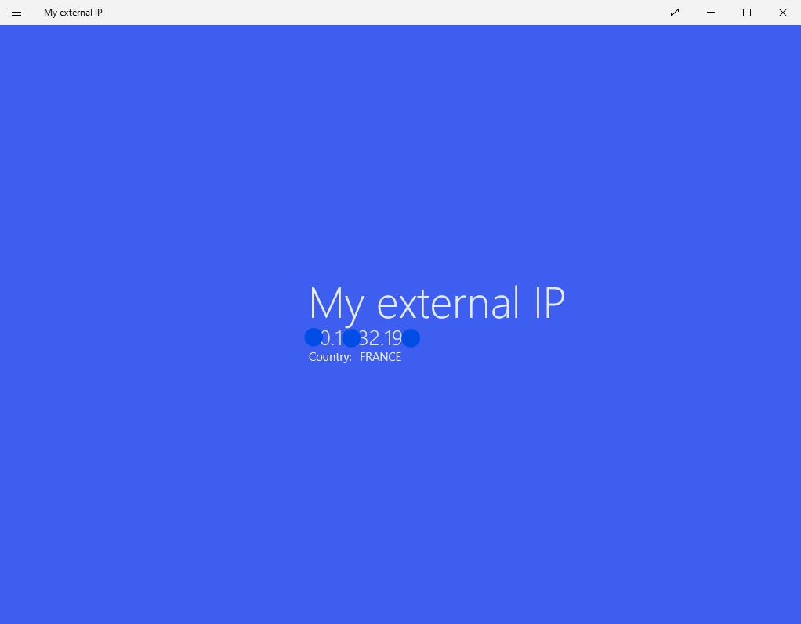

Les principaux logiciels
Cette machine virtuelle est fournie avec plusieurs logiciels préinstallés, ayant pour but de vous aider dans le déroulement de votre enquête.
Afin de vous aider à les appréhender au mieux, vous trouverez ci-dessous des explications concernant ceux le nécessitant.
My External IP - Connaître son adresse IP
Ce logiciel vous permet de vérifier votre adresse IP externe. Il est conseillé de l'utiliser afin de vérifier si votre système d'anonymisation s'est correctement activé.
Il vous suffit de le lancer, de consulter votre IP et de la comparer à celle qui vous est normalement attribuée lors d'une navigation libre.

OBS Studio - Enregistrer ses actions
OBS Studio est un logiciel qui vous permet d'enregistrer vos interactions avec votre interlocuteur.
Il filme votre écran, ou l'une de vos fenêtres, vous fournissant ainsi un fichier vidéo qui peut être saisi comme élément de preuve.
Afin de vous aider dans sa prise en main, nous vous proposons deux vidéos explicatives :
Paramétrage du logiciel
Utilisation du logiciel
SplitCam - Utiliser une webcam virtuelle
SplitCam vous permet de remplacer les images de votre webcam par une photo ou une vidéo, de manière transparente pour son utilisateur.
Attention cependant, sa prise en charge par les sites ou logiciels de communication peut être variable. Il faut systématiquement réaliser un test avant de commencer à discuter avec votre interlocuteur.
Afin de vous aider dans la prise en main de ce logiciel, nous vous proposons une vidéo explicative :
XnView - Consulter ou modifier les métadonnées
XnView est un logiciel qui vous permet de visualiser, modifier ou supprimer les métadonnées présentes dans certains fichiers "image".
Il est indispensable pour vérifier si votre interlocuteur n'y aurait pas laissé des traces, ou pour maîtriser celles que vous souhaitez vous-même laisser.
Attention, il est important de retenir que ces métadonnées sont facilement falsifiables.
Afin de vous aider dans la prise en main de ce logiciel, nous vous proposons une vidéo explicative :
HashTools - Calculer la signature numérique d'un fichier
Ce logiciel permet de calculer la signature numérique d'un fichier. Il permet également de la comparer avec une autre signature numérique précédemment acquise, afin de vérifier si deux fichiers sont identiques, ou non.
Afin de vous aider dans la prise en main de ce logiciel, nous vous proposons une vidéo explicative :
HTTrack - Copier un site internet
Ce logiciel permet de procéder à une copie d'un site internet en ligne, afin de le garder en élément de preuve.
Attention cependant, il ne permet pas de pouvoir accéder à des parties d'un site nécessitant une authentification.
Afin de vous aider dans la prise en main de ce logiciel, nous vous proposons une vidéo explicative :
Kleopatra - Utiliser le chiffrement pour ses communications
Ce logiciel permet de générer et gérer des clés PGP, servant à chiffrer des messages sur internet.
Il permet également de gérer ses propres clés, et de tenir un annuaire des clés publiques de ses interlocuteurs.
Afin de vous aider dans sa prise en main, nous vous proposons deux vidéos explicatives :